Labs
Our school labs provide a dynamic environment where students engage in hands-on learning across various scientific disciplines. Equipped with modern tools and resources, students conduct experiments, explore concepts, and foster critical thinking. The labs are designed to inspire curiosity, enhance practical skills, and reinforce classroom learning, ensuring that students develop a strong foundation in science and technology. Safety is our top priority, with trained staff guiding students in a secure and supportive setting.
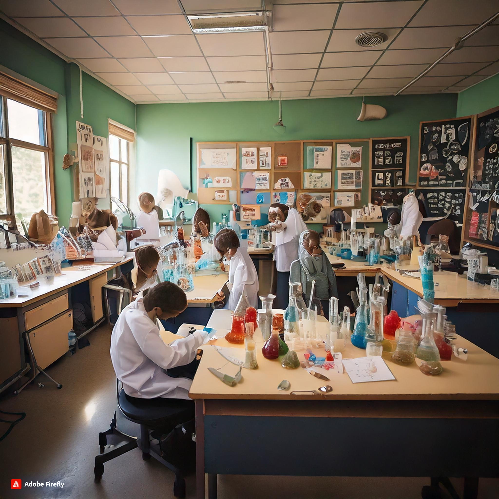 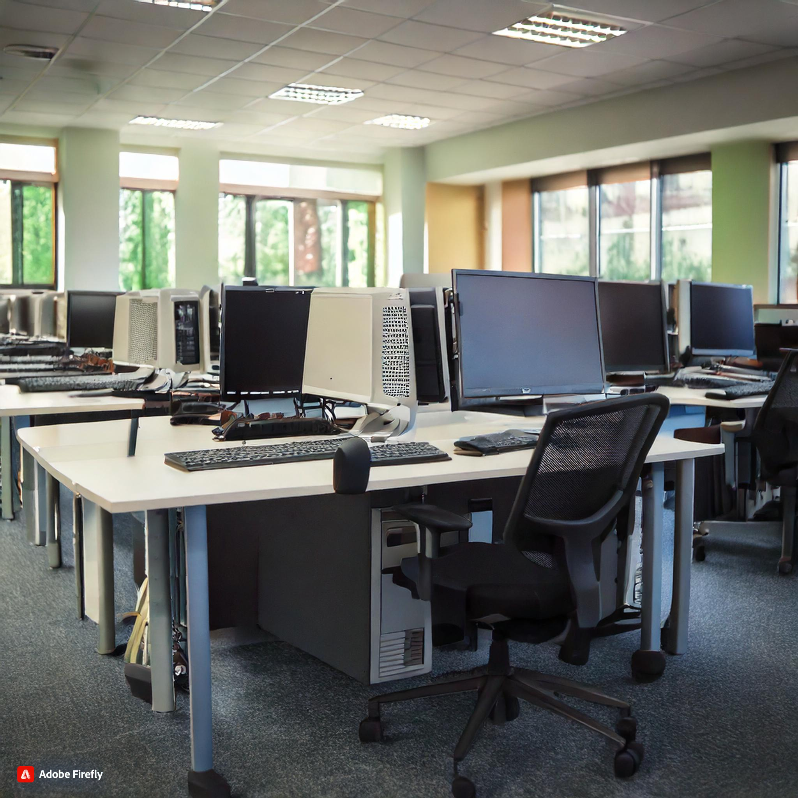
Sports
Our school sports program promotes physical fitness, teamwork, and discipline among students. We offer a wide range of activities, including team sports like soccer, basketball, and volleyball, as well as individual pursuits such as track and field and swimming. Through structured training and competitions, students develop not only athletic skills but also essential life skills like leadership, resilience, and sportsmanship. Our dedicated coaches foster a positive and inclusive environment, encouraging all students to participate, stay active, and build lasting friendships while enjoying the benefits of a healthy lifestyle.
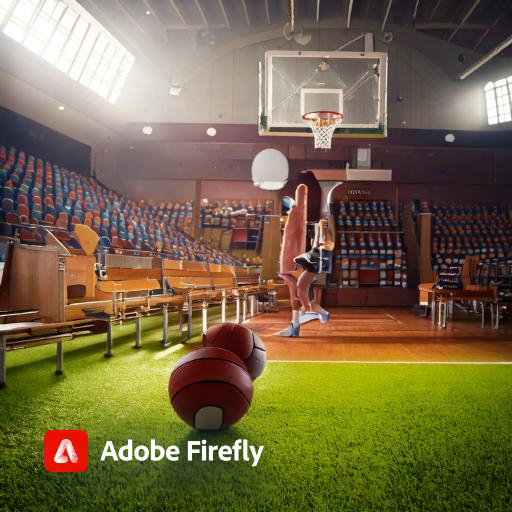 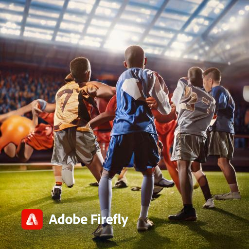
Fests
Our school fests are vibrant celebrations that bring together students, families, and the community. These events showcase creativity and culture through various activities, including performances, art displays, and interactive workshops. Fests promote student engagement and teamwork while providing a platform for showcasing talent and celebrating diversity. They foster school spirit, strengthen community bonds, and create lasting memories for everyone involved, making our fests a highlight of the academic year.
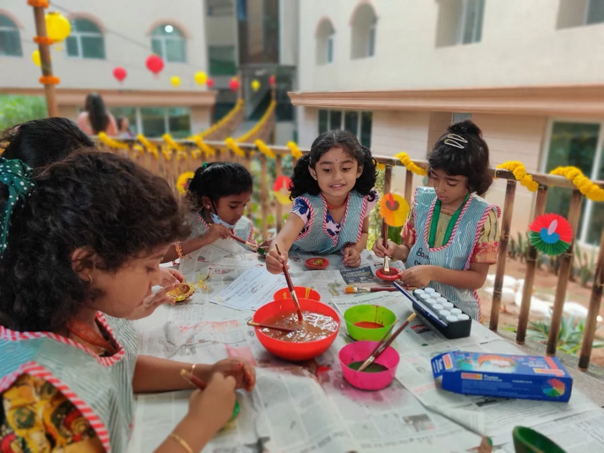 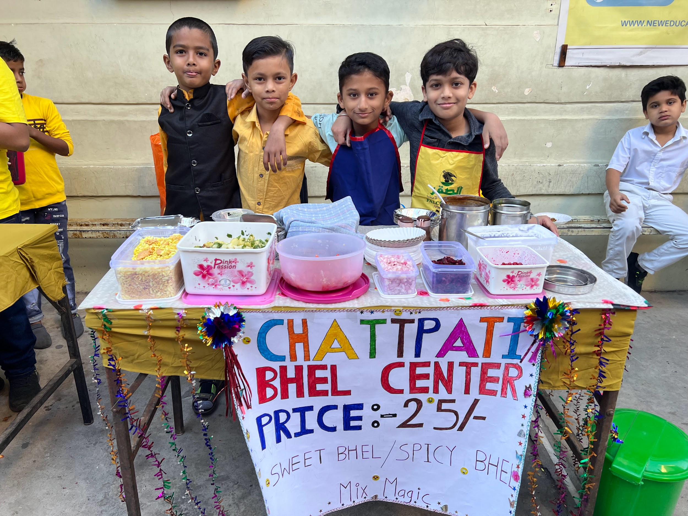 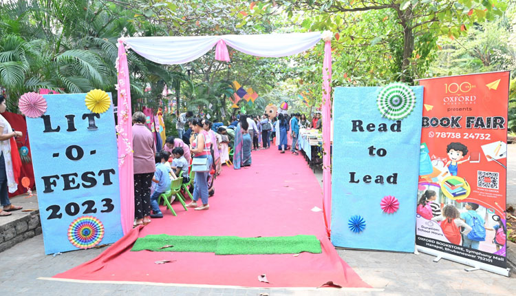
Exams
Exams in our school are designed to assess students' understanding and mastery of the curriculum while promoting academic integrity and personal growth. We provide a supportive environment that encourages effective study habits and stress management. Our exam preparation resources, including review sessions and tutoring, help students build confidence and succeed. By focusing on both knowledge and skills, we aim to prepare students for future challenges, fostering a lifelong love of learning and critical thinking.
 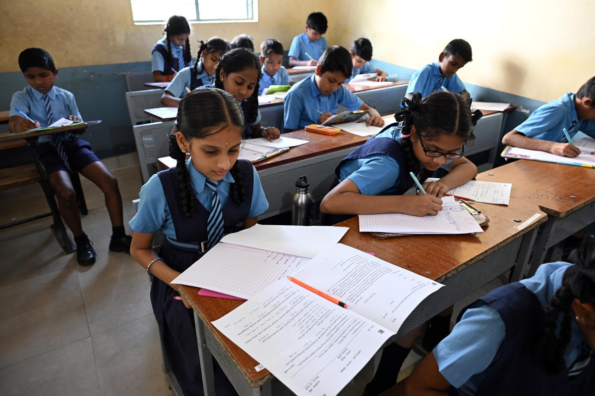
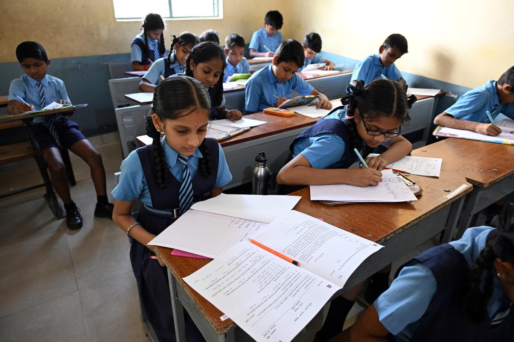
Trips
Our school trips offer enriching experiences that extend learning beyond the classroom. These excursions are carefully designed to complement the curriculum, providing students with hands-on opportunities to explore historical sites, museums, and natural wonders. Each trip fosters curiosity, encourages teamwork, and enhances social skills as students engage with their surroundings and each other. Safety is our priority, with trained staff accompanying students to ensure a secure and enjoyable experience. School trips not only create lasting memories but also inspire a deeper appreciation for the world around them..
 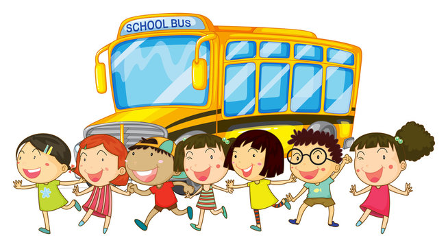
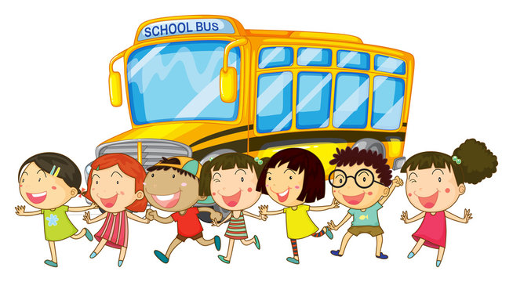